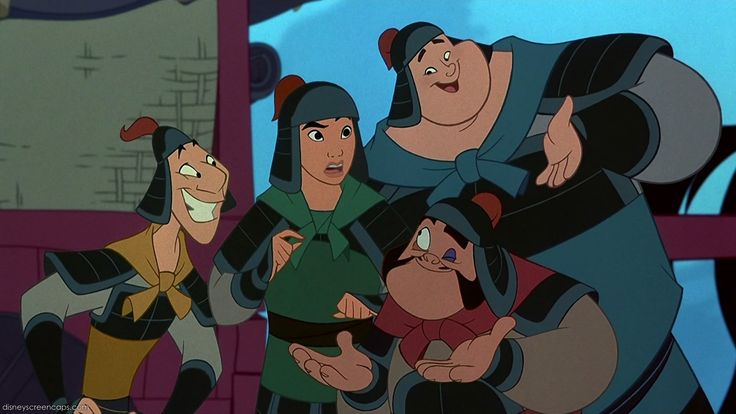

The goofy trio consists of Yao, Ling, and Chien-Po. Yao is the big tuff guy but has a soft side. Ling is the scrawny guy who tries to be cool. Chien-Po is the gentle giant and is kind of like the peace keeper of the group. These 3 men are soldiers that Mulan meets at the training camp. At first they all hate her because her clumsiness caused them all to get in trouble. Later in the movie however they all become friends. I love all 3 of these characters because they help Mulan and have some very funny banter. An example of this would be when they are marching off to fight and are singing the song "A girl worth fighting for". The secretary of the emperor describes his girl worth fighting for. And Yao not so subtely says "the only girl who would ever love him is his mother"
